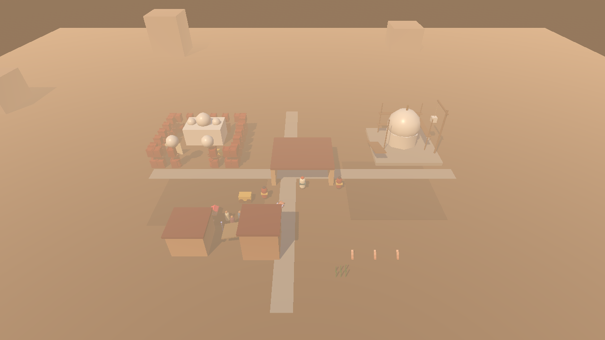
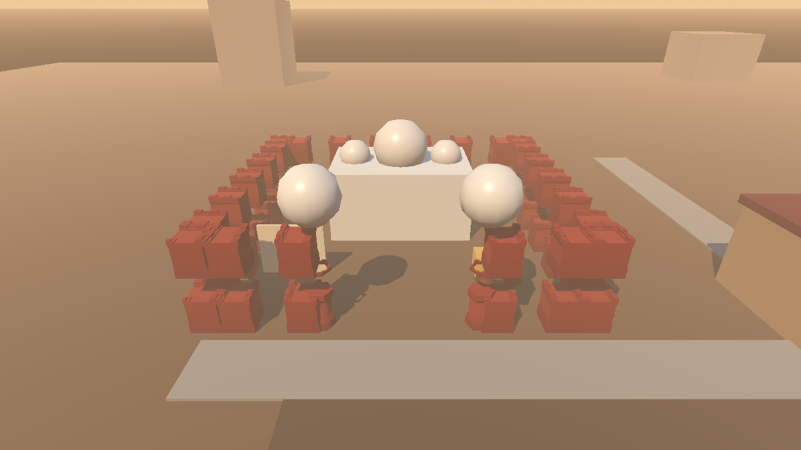
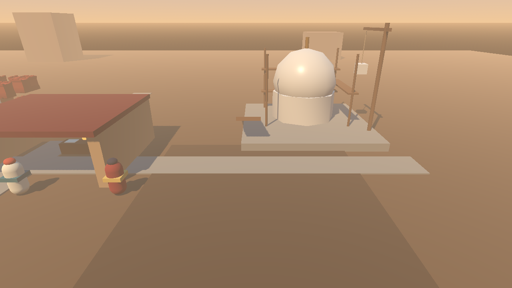
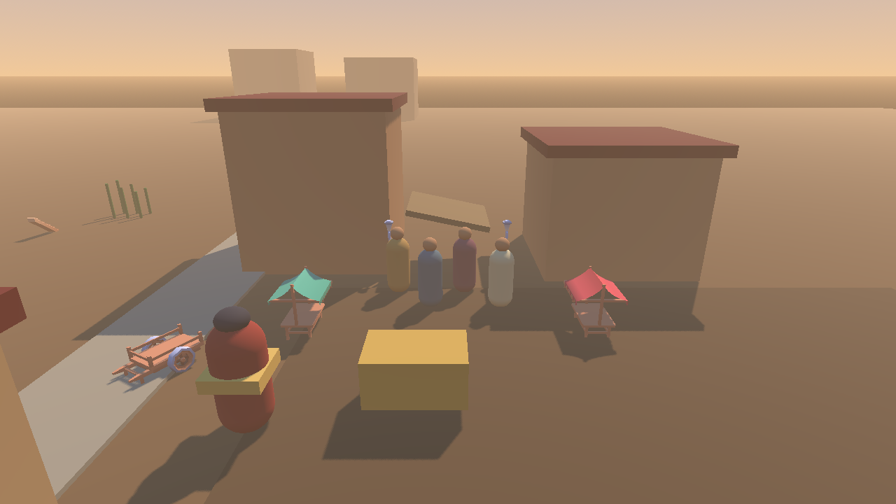
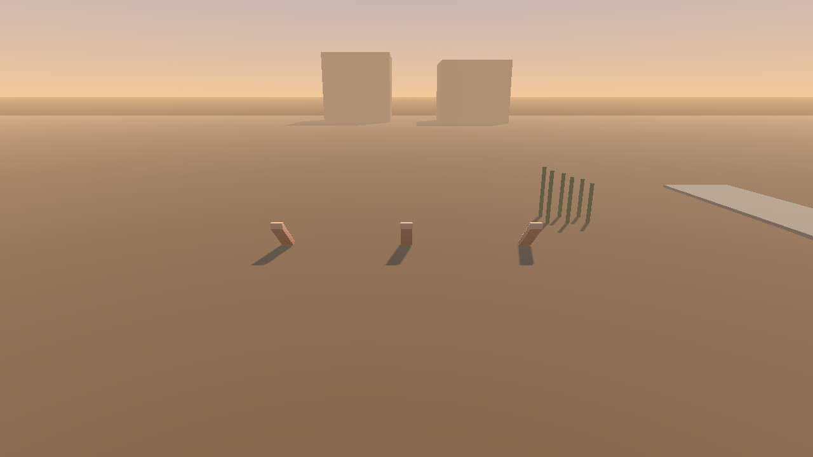

Agra MVP art pass (Issue #1)
Godot-rendered viewports. Fresh-eyes check: fort / construction site / bazaar / ghats recognizable without in-game labels.

overview — fort (red), taj site (white dome), bazaar (awnings), ghats (steps), bureau

fort gate — sandstone walls, towers, crenellations, durbar domes

taj site — half-dome, scaffolds, crane; guards in period dress

bazaar — Kenney stalls, cart, crowd blend, lanterns

ghats — steps, water, reeds hiding
Acceptance checklist (from shots/stats.json)